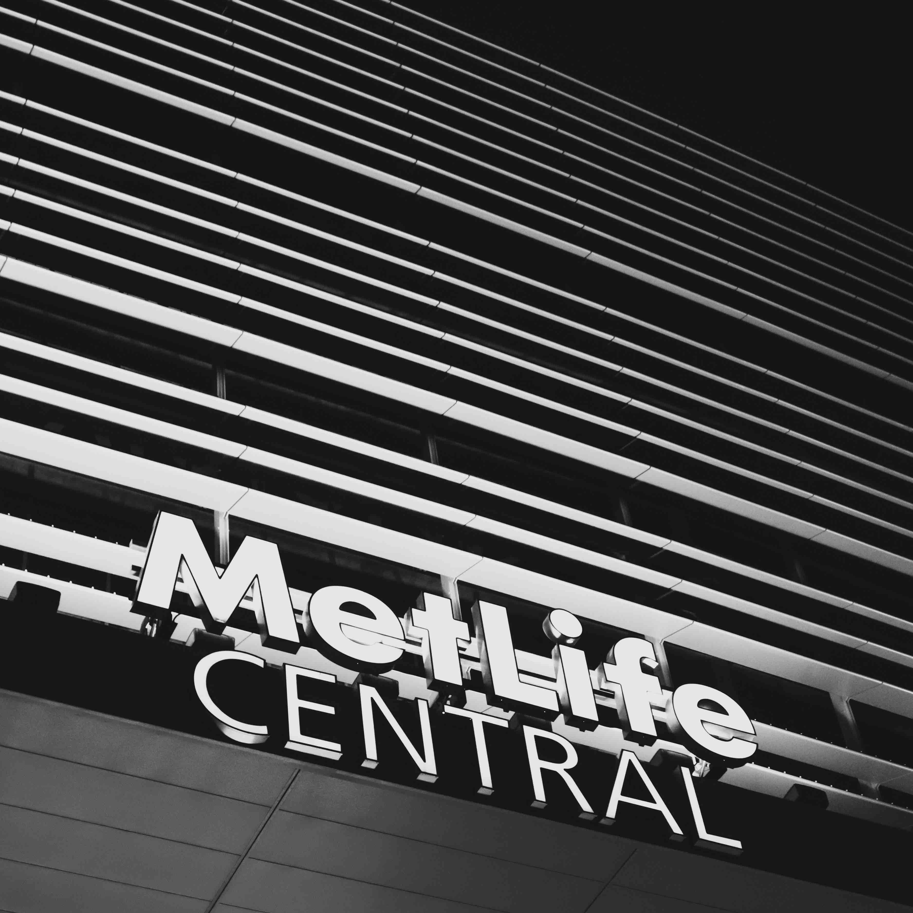
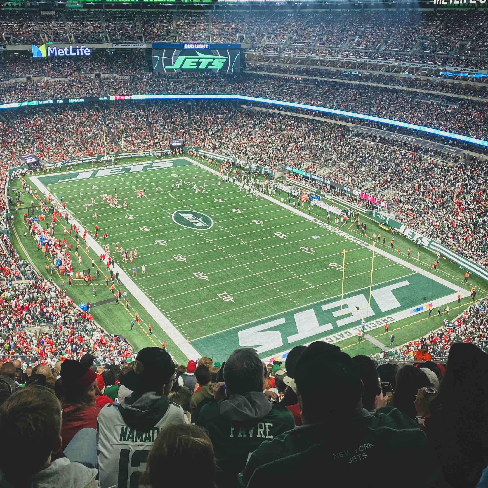
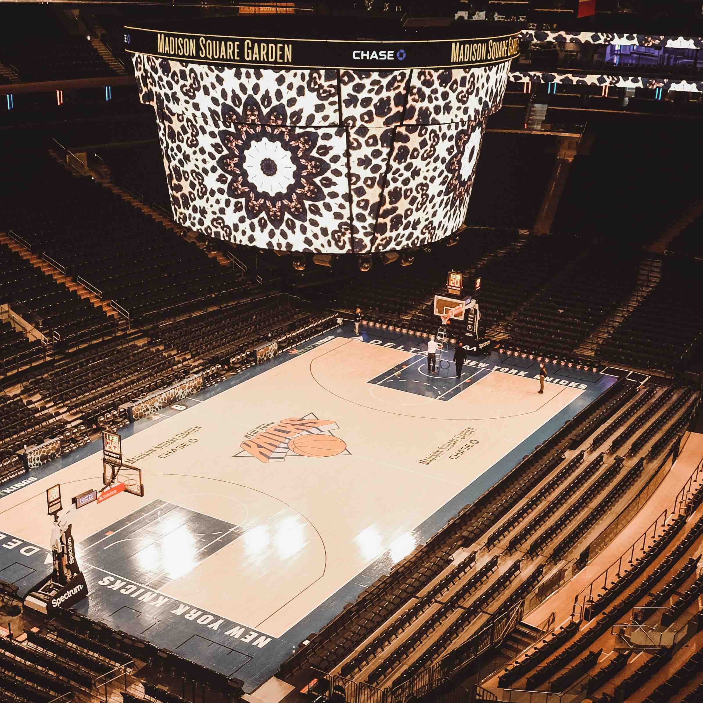
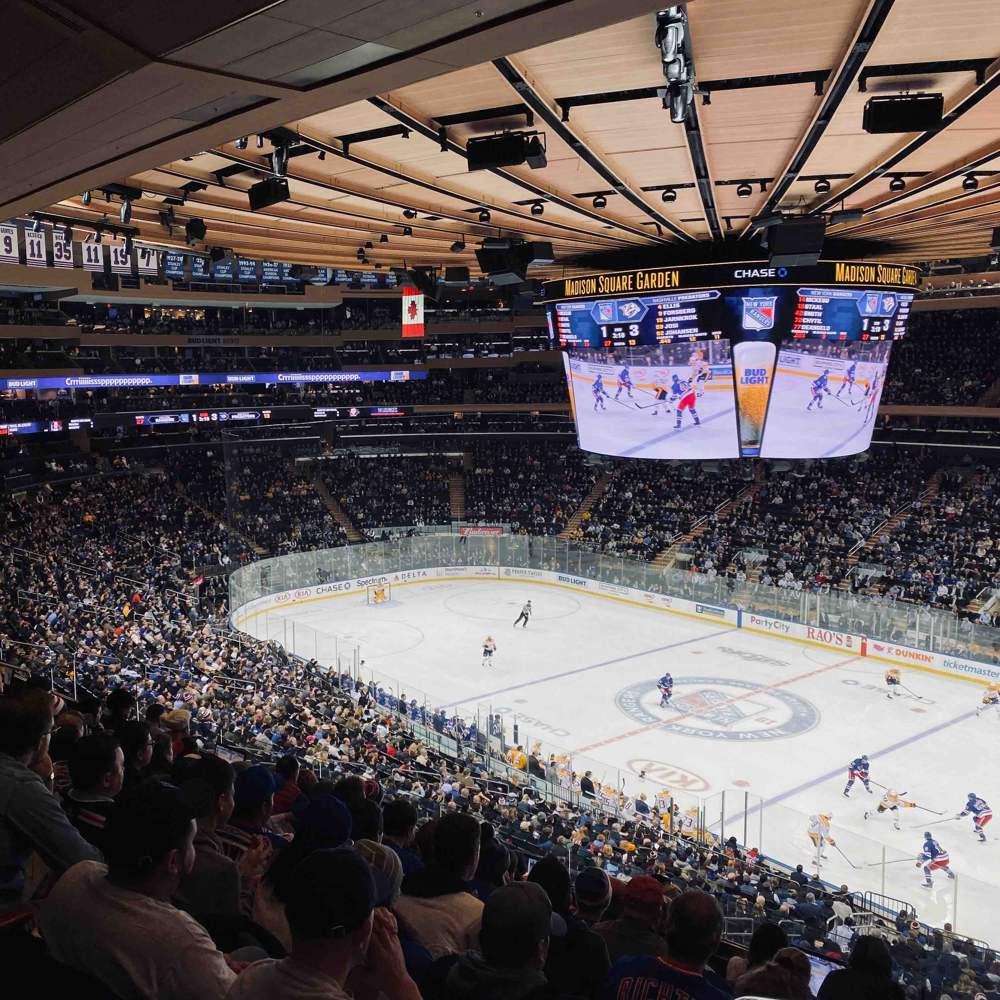

Giants
Sport: American Football
League: NFC East
Stadium: MetLife Stadium
NFL Championships: 2012, 2008, 1991, 1987
Jets
Sport: American Football
League: AFC East
Stadium: MetLife Stadium
NFL Championships: 1969
Knicks
Sport: Basketball
Conference: Eastern Conference
Standing: Second
Arena: Madison Square Garden
Championships: 1973, 1970
Mets

Sport: Baseball
League: National League East
Standing: Third
Arena/Stadium: Citi Field
World Series Championships: 1986, 1969
Rangers
Sport: Ice Hockey
Division: Metropolitan Division
Standing: First!
Arena: Madison Square Garden
Championships: 2013–14, 1993–94
Yankees

Sport: Baseball
League: American League East
Standing: First!
Stadium: Yankee Stadium
World Series Championships: 27 championship tiitles!! More than any other team!